|
|
Service solutions
|
|
Flyttkartonger
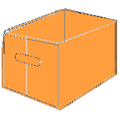Räkna med att flyttlasset är ungefär 0,35 kbm/kvm boyta. Sedan tillkommer garage, förråd, vind och dyl. Allt som går ska packas ner i riktiga flyttkartonger. 1 flyttkartong = ca 0,1 kbm. Dessa finns gratis till låns hos oss på Dinamax. Det går även att få dem hemkörda för en mindre avgift. |
Märkning
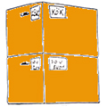Märk flyttkartongerna med vad de innehåller och till vilket rum de ska. Separera gärna de saker du kommer att behöva direkt i din nya bostad, t.ex. hygienartiklar och sängkläder. Märk även cyklar, barnvagnar och dyl. som står i allmänna utrymmen och uppge detta vid bokningen. |
|
Demontering
Demonteringsbara möbler, som t.ex. bokhyllor, måste plockas isär och känsliga delar bör
emballeras med bubbelplast. Lösa hylldelar kan staplas och lindas med snöre eller flyttejp.
Glöm inte att ta vara på "plupparna" till hyllplanen!Även stora lekredskap, som t.ex. rutschkanor, måste nedmonteras. Då dessa ofta är något rostiga är det bra om detta påbörjas i god tid. Vill du inte utföra demonteringen själv kan vi på Dinamax hjälp dig, t.ex. i samband med packningen. |
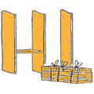 |
|
Böcker/Papper
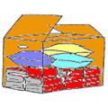När du packar böcker och papper så fyll bara halva kartongen med dessa pga. tyngden. I resterande utrymme kan du lägga kläder och andra textiler. |
Glas/Porslin
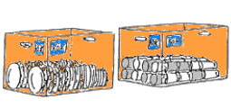När du packar porslin ska tallrikar och fat ställas på högkant. Glasen däremot bör läggas ner. Använd rejält med makulaturpapper. Det finns att köpa av oss för 35kr/kg. |
|
Mattor/Bäddmadrasser
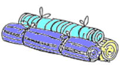Rulla ihop mattor och bäddmadrasser och knyt dem med snöre. Även långa föremål, såsom gardinstänger och skidor m.m. buntas ihop och snöras/tejpas. |
Kläder/Textiler
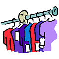Kläder kan packas i flyttkartonger och/eller i resväskor. Till hängande kläder kan särskilda flyttgarderober användas. Dessa finns att låna eller köpa av oss. |
|
Tavlor/Speglar
Större tavlor och speglar bör emballeras med bubbelplast, hörnskydd och tejp. Mindre varianter kan däremot packas i vanliga flyttkartonger. |
Kristall/Ljuskronor
Kristallkronor och andra ömtåliga takarmaturer flyttar vi i särskilda lampkartonger. Säg till om du vill låna eller köpa av oss. |
|
Skåp/Hurtsar
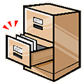Töm alla större skåp och hurtsar på dess innehåll och lås eller tejpa igen dörrarna. Lådorna kan dock sitta kvar. Ta ut alla nycklar och förvara dem säkert. |
Elektrisk apparatur
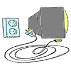Fast monterad elektrisk utrustning, t.ex. tvätt- och diskmaskiner, som ska tas med i flytten, ska demonteras av behörig fackman. Alla sladdar kopplas ur och buntas ihop, samt fästs med snöre eller tejp. |
|
Ömtåliga föremål
Ömtåliga föremål såsom stereo, datorer, konstglas och antikviteter emballeras väl och packas i noga märkta kartonger. |
Värdesaker
Pengar, smycken, bankböcker och värdepapper eller andra värdesaker måste du ta hand om själv. Samla ihop dessa i god tid innan flytten. |
|
Alkoholdrycker
Det sammanlagda värdet på drycker får inte överstiga 5000 kr utan att en förteckningslista upprättas. Tänk också på att använda rikligt med makulaturpapper när du packar glasflaskor. |
Matvaror
Vissa matvaror från kyl, frys och skafferi kan inte tas med i flytten. Dessa kastas eller lämnas i sådana fall av den personal som packar. |
|
Trädgårdsredskap
Gräsklippare och andra redskap måste vara ordentligt rengjorda och tömda på drivmedel. Tänk på att de ska transporteras med ditt övriga bohag. |
Brandfarliga vätskor
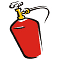Brandfarliga vätskor eller liknande, t.ex. ammunition, gasbehållare, krut m.m. får vi pga. försäkringsregler inte transportera. |
|
Blommor/Krukväxter
Dinamax kan inte ta ansvar för blommor och krukväxter. Under vintertid är dessa svåra att transportera utan att de fryser. Vill ni ändå att vi tar dem så undvik att vattna tre dagar innan flytt. |
Motorfordon
Tranport av motorfordon, såsom bilar, båtar, motorcyklar osv. ingår inte i våra flyttuppdrag. |
|
Tömningar
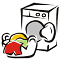Glöm inte att tömma tvättmaskin, diskmaskin, akvarium och vattensäng på tvätt, disk och vatten innan flytten! |
Skada/Förlust
Skada eller förlust anmäls omedelbart efter upptäckt till vårt kontor. Dokumentera skadan med foto om det är möjligt. |